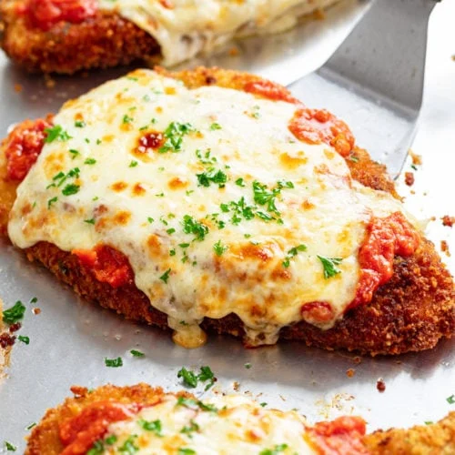

Chicken Parmesan

Description
Ingredients
- Chicken Breasts
- Salt/Pepper
- Vegetable Oil
- Flour
- Garlic Powder
- Eggs
- Breadcrumbs
- Mozzarella Cheese
- Parmesan Cheese
- Marinara Sauce
Steps
- Preheat oven to 425°
- Combine the flour, egg, and breading mixtures in 3 separate shallow pans.
- Slice the chicken in half lengthwise to create 2-3 thinner slices.
- Dredge completely in the flour mixture.
- Dip the chicken in the egg mixture.
- Coat the chicken generously in the breadcrumbs.
- Heat oil over medium-high heat.
- Remove chicken.
- Transfer the chicken to a large, light colored baking sheet.
- Top with marinara sauce and mozzarella cheese.
- Bake uncovered for 12 minutes. Broil at 425° for 1-2 minutes.
- Garnish with fresh parsley